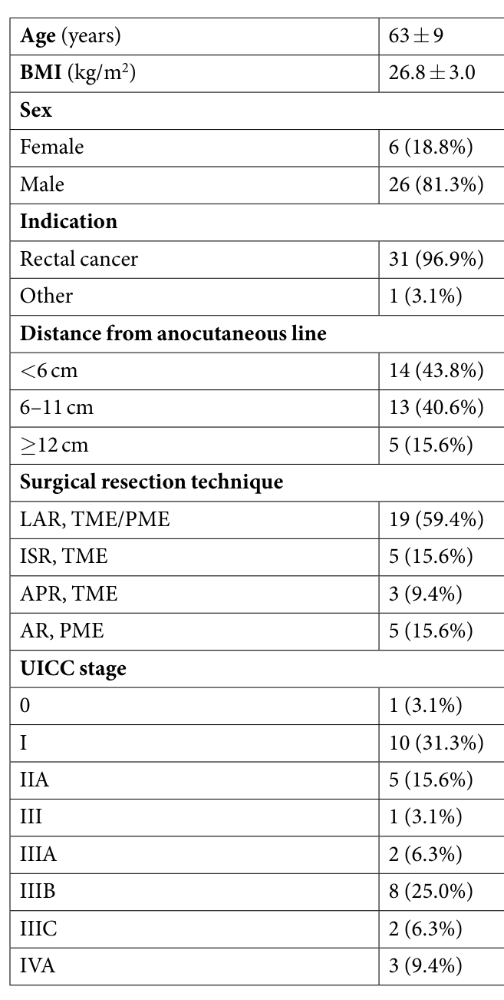
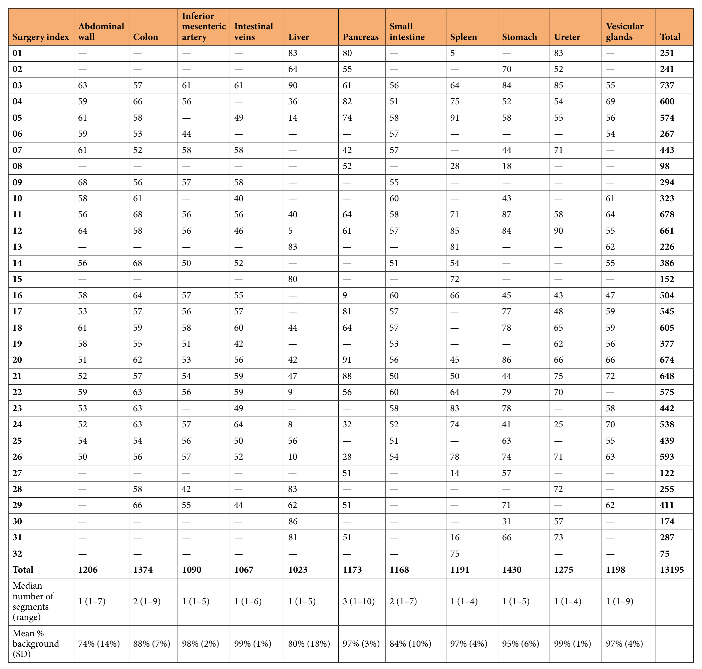
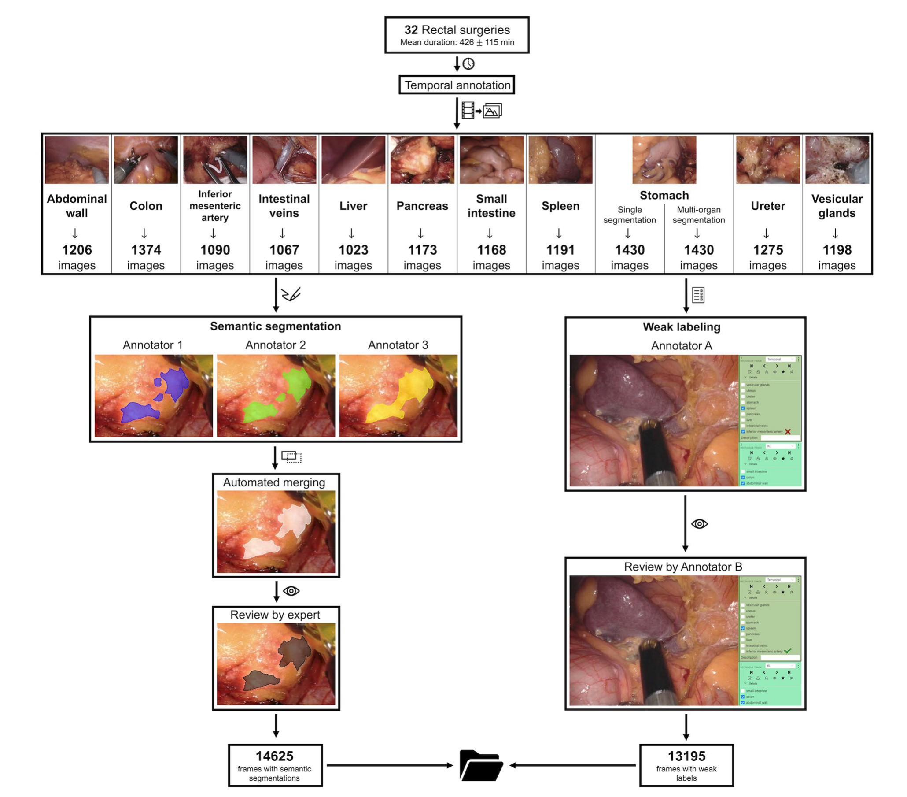
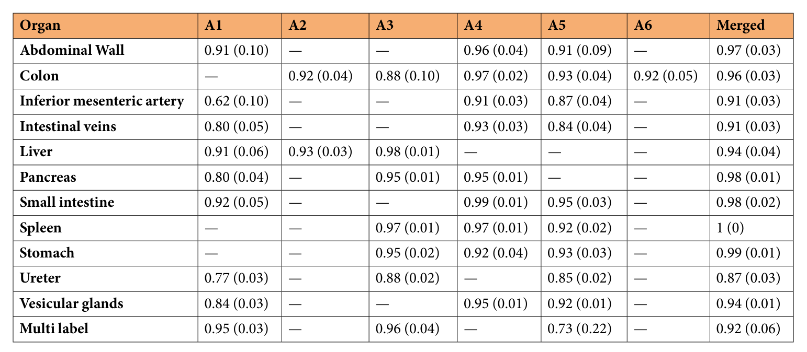
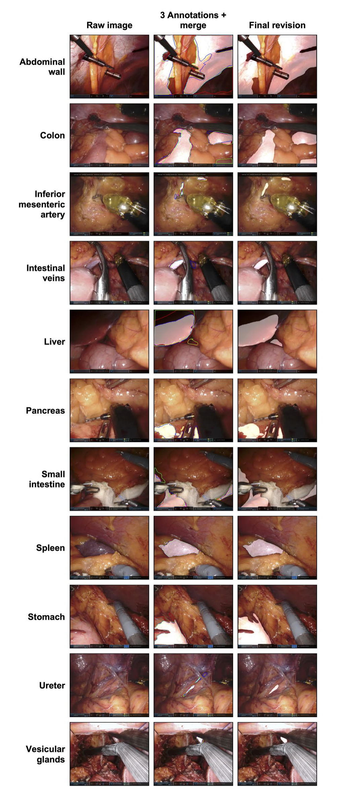

32 台机器人直肠手术中 11 类腹部解剖结构的像素级分割：DSAD 数据集说明
The Dresden Surgical Anatomy Dataset for Abdominal Organ Segmentation in Surgical Data Science
Matthias Carstens, Franziska M. Rinner, Sebastian Bodenstedt 等 8 人（德累斯顿工业大学附属医院、德累斯顿国家肿瘤疾病中心等） | Scientific Data 10:3（2023），Data Descriptor
数据集手术数据集解剖分割机器人手术直肠手术弱标签
DSAD 从 32 台机器人直肠手术中抽出 13195 张图像，为 11 类腹部结构做三人分割、STAPLE 合并和专家复核，另附逐帧弱标签与 1430 张多器官图像，但论文不给划分和模型基线，质量证据也以同一专家终稿为参照。
数字核对 全部在原文中找到结构检查 通过细节追问 12 条，其中 5 条论文未说明反向检验 4 条
图文解读
9 个主题板块，按论文的论证顺序展开
1背景与动机
机器人手术画面信息很多，判断画面里是哪段肠、哪条血管却要靠经验。 作者认为自动识别解剖结构可以在术中提醒易损结构，降低并发症。
训练这类模型需要像素级标签。论文列出的已有公开数据，Cholec80、LapGyn4、SurgAI 和海德堡结直肠数据集，多为图像级标签，只说明结构是否出现；像素级标注又主要集中在器械。缺的是一份覆盖多个腹部器官、每类规模足够的解剖分割数据。
2核心观点速览
DSAD 的答案是：在 32 台达芬奇直肠手术视频上抽帧，为 11 类结构做三人分割，用 STAPLE 合并，再由一名医生复核修改。
- 每类 1023 到 1430 张图，来自 20 到 23 台手术，每台每类最多 100 帧。
- 每张单器官图只标一个结构；1430 张胃图像另标全部可见结构。
- 每张图都有 11 类可见性弱标签。
- 合并结果与终稿的 F1 多在 0.9 以上，输尿管最低为 0.87。
边界同样重要： 单中心、单术式，没有模型基线和划分，表 3 的参照是同一专家的终稿。
亮点图像数大体均衡，类别不平衡来自像素面积公开三份原始标注和合并结果，可直接研究标注噪声
数据32 台手术，13195 张单器官图像，14625 帧分割图像分辨率 1920 × 1080，不做预处理
3图像从哪来
所有图像来自德累斯顿一家医院 2019 年 2 月到 2021 年 2 月的 32 台机器人直肠手术，内镜为达芬奇 Xi/X（直径 8 mm、30° 角）。患者 26 例（81.3%）为男性，31 例（96.9%）为直肠癌，平均年龄 63 ± 9 岁。

论文原图编号：Table 1。32 名患者的基本特征、术式与分期。
这决定了画面以盆腔和下腹部为主。 肝、胃、脾等上腹器官只在部分步骤出现，所以表 2 中肝在个别手术里只有 5 张图。
4标签长什么样
| 标签 | 范围 | 含义 |
|---|
| 单器官分割 | 13195 张 | 每张只有一个结构为白色 |
| 多器官分割 | 1430 张胃图像 | 每个可见结构一张掩码 |
| 弱标签 | 全部图像 | 11 类结构是否可见 |
单器官掩码里，别的器官即使在画面中也记为背景。 所以单器官子集是 11 个独立的二值任务，真正的多类分割只有 1430 张图。

论文原图编号：Table 2。每台手术每类结构的图像数、分段数中位数与平均背景占比。
平均背景占比从腹壁的 74% 到肠静脉、输尿管的 99%。图像数相差不大，难度差异主要来自目标面积。
数据胰分段数中位数为 3（范围 1 到 10），最容易被分成多块每个手术文件夹含 5 到 91 对图像与掩码
5标注流程

论文原图编号：Fig. 1。时间标注、抽帧、三人分割、自动合并、专家复核，以及弱标签的标注与复核。
- 一名医学生标出肝、胰、脾、胃、输尿管出现的时间段；其他五类手工剪片段。
- 每类至少 20 台手术，每台等间隔抽最多 100 帧，只剔除完全不可用的帧，保留烟雾和出血。
- 三名医学生在
3D Slicer 中逐像素分割，三份掩码用 STAPLE 等权合并。 - 一名有三年微创经验的医生在
CVAT 上选出最合适的一份并修改。
抽帧规则的作用是防止少数手术主导某一类。 帧间隔多大、是否去除近重复帧，论文未说明，这会影响有效样本量。
6表 3 说了什么

论文原图编号：Table 3。各标注者与合并结果相对终稿的 F1，括号内是归一化 Hausdorff 距离，不是标准差。
合并结果在 12 行中有 11 行 F1 达到 0.91 以上，脾为 1（0）。输尿管合并 F1 为 0.87，但距离只有 0.03，差异集中在细长边界上。单人分歧更大：肠系膜下动脉 A1 只有 0.62，多器官子集 A5 只有 0.73，距离 0.22。

论文原图编号：Fig. 2。原图、三人轮廓加合并、终审分割；输尿管和血管的轮廓分歧最明显。亮点越细的结构，标注越不一致合并结果普遍比单人更接近终稿
7结果没说什么
- 没有模型基线。 划分和分割实验在 Kolbinger 等人的另一篇预印本里。
- 没有独立的一致性。 只有一名专家，没有第二人从零标注。
- 没有跨域证据。 单中心、单术式、单一机器人内镜。
- 没有说明聚合方式。 表 3 按图平均还是按像素汇总，论文未说明。
8一个替代解释
作者用“合并 F1 高于单人”支持 STAPLE 融合。但终稿是专家在合并结果上修改的，还可以直接选用它。 从现成掩码出发修改，结果自然接近它，这是锚定效应。单人分数低，也可能只是因为合并结果是专家最常选的候选。
要分开这两种解释，需要隐藏合并结果的复核，或第二位专家独立标注。论文没有这项证据，所以表 3 只能说明终稿没有被大幅重画，不能给出标签噪声的上限。
9复用要注意什么
- 按手术编号划分；手术 03 一台就跨全部 11 类。
- 不要把 11 个文件夹的掩码直接拼成多类标签，会制造错误负样本；用弱标签屏蔽，或只用多器官子集。
- 细长结构同时报告 Dice 和边界指标。
- 许可同时写“非商业”和 CC-BY，商业用途前向作者确认。
自查记录
第 1 轮评原流程生成的笔记，第 2 轮评多轮思考和叙事修改之后的笔记与文稿；第 1 轮在改动前记录，两轮都附当时笔记和文稿的哈希。分数是模型自评，不是外部评审
第 1 轮 · 原流程笔记 · 笔记 0a2b88946.8 分
第 1 轮自评：数据来源、四步构建流程、表 1 到表 3 与两张图齐全。D4=6：边界只在局限中列出，没有逐条给理由，表 3 以专家终稿为参照的偏差只写了一句。D5=6：只与四个图像级数据集对比，没有说明与器械分割数据的分工。D6=6：复用建议过短。D9=5：各节直接罗列事实，缺核心观点速览，数字后少有含义，缺过渡。H3 未做数字核对。
D1 7D2 8D3 8D4 6D5 6D6 6D7 7D8 8D9 5
硬性检查 H1:pass H2:pass H3:unknown H4:pass
- 按 insight pass 补齐知识点、细节问答与质疑，并写回笔记
- 在研究问题末尾加入核心观点速览
- 每节开头写明问题，数字后补含义，节末加过渡
- 把标注者分工、单人复核、许可矛盾、时间标注人数矛盾逐项写成论文未说明并说明影响
- 补充单器官掩码把其他结构记为背景对训练的影响，以及按手术划分的必要性
- 用 lint_report.py --mode note 做数字核对，推导值登记到 number-exceptions
第 2 轮 · 叙事与多轮思考后 · 笔记 cde0c582 · 文稿 8953a2498.2 分
第 2 轮自评：insight pass 补齐了表 3 括号含义（归一化 Hausdorff 距离而非标准差）、六名标注者分工、聚合方式、近重复帧、许可矛盾与时间标注人数矛盾，均写成论文未说明。加入核心观点速览、每节开头问题与节末过渡，并把锚定效应对表 3 的影响、单器官掩码拼多类时的错误负样本写入深度分析。数字核对无未匹配项，图像内数字登记在 number_exceptions.json。D5=7：论文只与四个图像级数据集对比，笔记无法从原文补出与其他像素级解剖数据的定量比较。D1=8：论文没有模型基线，结果链只能到标注一致性。D4 从 6 升到 9，D9 从 5 升到 8，因为边界逐条给出理由且叙事顺序已按讨论顺序重排。
D1 8D2 8D3 9D4 9D5 7D6 8D7 8D8 8D9 8
硬性检查 H1:pass H2:pass H3:pass H4:pass